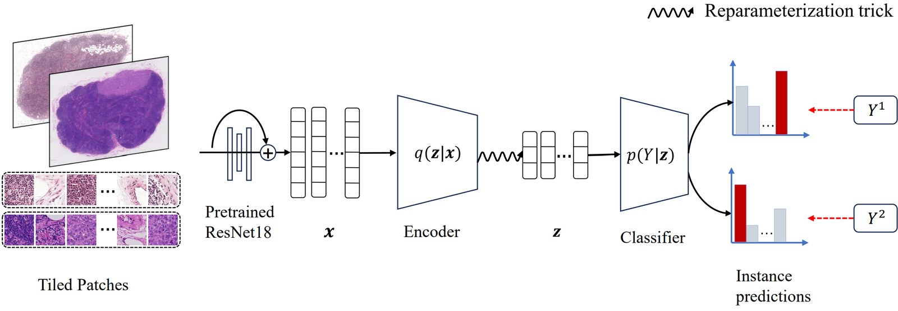
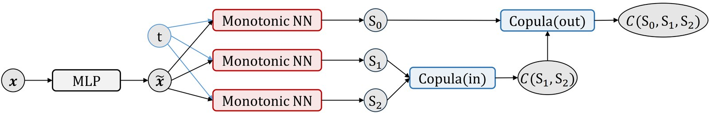
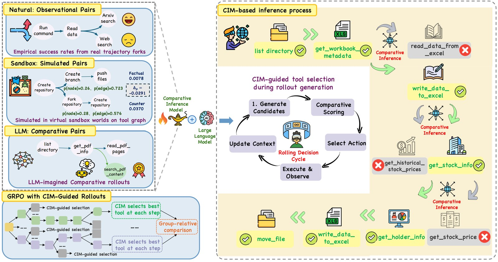

Ph.D. student · School of Computer Science and Information Technology · Adelaide University
I am a second-year Ph.D. student in computer science at Adelaide University (Oct 2025–), supervised by Prof. Thuc Le, Prof. Jiuyong Li and Prof. Lin Liu in the 4L Lab. Previously, I received a master's degree from Southeast University, jointly supervised by Prof. Min-Ling Zhang and Prof. Weijia Zhang in the PALM Lab. I also received a master's degree in artificial intelligence from Monash University.
My research is on causality and machine learning. It centres on two complementary questions: how to uncover the latent causal relationships underlying real-world data, and how to use causal insights to improve prediction, even when the world is only partially observed.
My research interests include:
My thinking about philosophy has shaped my academic taste.
I always welcome research discussions and collaborations. Please feel free to reach out by email: xin.liu@adelaide.edu.au.
| Sep 2026 | Our paper Choosing Before Acting is accepted at NeurIPS 2026. See you in Sydney in December! 🎉 |
| Mar 2026 | FocusMIL received scores of 5/4/3 at CVPR 2026 and was recommended to CVPR Findings. We opted out and are submitting it elsewhere. |
| Dec 2025 | Our paper From Correlation to Causation: Max-Pooling-Based Multi-Instance Learning Leads to More Robust Whole Slide Image Classification (FocusMIL) is now available! Paper · Code |
| Oct 2025 | Started my Ph.D. at Adelaide University. |
| May 2025 | Presented HACSurv at AISTATS 2025 in Mai Khao, Thailand. |
| Jan 2025 | Our paper HACSurv is accepted at AISTATS 2025, with scores of 4/4/4/3. |

We show that max-pooling predicts from one-sided positive evidence, which makes it inherently robust to bias factors in negative bags. We identify the failure modes of existing max-pooling methods and propose FocusMIL to fix them.

We relax the assumption of conditional independence among competing risks. We use a hierarchical Archimedean copula to capture the asymmetric dependence structure induced by unobserved confounders.

We train a comparative inference model to estimate the long-horizon value of candidate tool calls before execution. The model guides tool selection and provides step-level feedback for reinforcement learning.
| 2025 – 2029 | Australian Government Research Training Program (RTP) Scholarship, Adelaide University. |
| Jun 2025 | Outstanding Graduate, Southeast University. |
I am a philosophy enthusiast. Reading and thinking about philosophy has shaped my academic taste. These are the three philosophers who have influenced me the most:
| High school | Wang Yangming 王阳明 (1472–1529) — critically inherited traditional Chinese philosophy. |
| Undergraduate | Ludwig Wittgenstein (1889–1951) — showed that many long-standing philosophical problems arise from the misuse of language. |
| Graduate school | Judea Pearl (b. 1936) — advanced the development of causal science. |
In my spare time, I enjoy cooking, working out, and singing.
| Nov 2024 | Copula-based Survival Analysis — University of Alberta (online). |
Reviewer: ICLR 2027, IJCAI 2025.